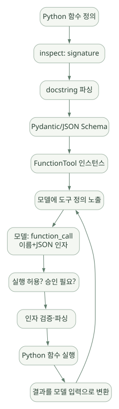

핵심 원리 / 단원 03
함수 계약을 실제 실행으로 연결하기
스키마·승인·인자 검증·권한·실행 위치
먼저 연결해 보기
Function Tool은 함수의 이름·설명·입력 스키마와 실행 핸들러를 묶습니다. 모델이 요청한 인자를 파싱할 수 있어도, 그 사용자가 해당 데이터를 조회해도 되는지는 실행 경계에서 다시 판단해야 합니다.
로컬 함수, SDK가 관리하는 MCP, Hosted 도구와 Sandbox는 실행 위치와 데이터 전송 경계가 다릅니다. 도구 연결 방식만 보고 같은 권한이나 격리 수준을 가정하지 마세요.
읽는 관점누가 자격증명을 보유하고 어디서 실행하며 어떤 결과가 모델로 전달되는지 따라가세요.
9. Tool — Python 함수에서 실제 업무 실행까지#
9.1 Tool의 기본 의미#
Tool은 LLM이 호출 요청을 만들 수 있는 기능을 선언한 것이다. 함수 이름, 설명, JSON 입력 스키마, 실행 핸들러를 SDK가 묶는다. 예를 들어 get_lot_summary(lot_id)를 제공하면 모델은 어떤 lot 정보를 조회할지 선택하지만, 서버는 요청 받은 lot이 사용자에게 허용된 데이터인지 별도로 검증해야 한다.
9.2 @function_tool 내부 개념#
넓은 도식은 가로로 이동하며 읽을 수 있습니다. 도식 크게 보기 ↗

원문에 수록된 학습용 도식입니다. 노드·화살표·분기 라벨을 보존해 다시 배치했습니다. 세부 조건과 예시·구현의 구분은 앞뒤 본문을 함께 읽으세요.
도식 원문 보기 (Mermaid)
flowchart TD
F[Python 함수 정의] --> I[inspect: signature]
I --> D[docstring 파싱]
D --> S[Pydantic/JSON Schema]
S --> T[FunctionTool 인스턴스]
T --> L[모델에 도구 정의 노출]
L --> Q[모델: function_call 이름+JSON 인자]
Q --> V[실행 허용? 승인 필요?]
V --> P[인자 검증·파싱]
P --> E[Python 함수 실행]
E --> O[결과를 모델 입력으로 변환]
O --> L핵심: Tool 정의는 '인터페이스'이며, 실행은 도구 런타임에서 일어난다. 이 과정에서 guardrails, timeout, 실패 변환, tracing 같은 요소가 관여한다. [S04], [C04], [C05]
9.3 실제 업무용 안전한 함수 형태#
from dataclasses import dataclass
from agents import Agent, RunContextWrapper, Runner, function_tool
@dataclass
class ProcessContext:
user_id: str
permitted_fabs: frozenset[str]
db: object # 실제 개발에서는 읽기 전용 Repository 프로토콜 정의
@function_tool
async def get_lot_metrics(
ctx: RunContextWrapper[ProcessContext],
fab_id: str,
lot_id: str,
) -> str:
"""허용된 FAB 내 Lot의 승인된 KPI 요약을 조회한다."""
if fab_id not in ctx.context.permitted_fabs:
raise PermissionError("해당 FAB 조회 권한 없음")
# 실제 구현: 고정 SQL 템플릿 + 바인딩 변수 + 행 수 제한 + 감사 로그
return f"조회 예시: {fab_id}/{lot_id}"
agent = Agent[ProcessContext](
name="ProcessReader",
instructions="권한이 있는 데이터만 조회하며 결과의 근거를 보존한다.",
tools=[get_lot_metrics],
)
# 예시 호출: 실제 DB 클라이언트 주입 전에는 조회되는 코드가 아님
# result = await Runner.run(agent, "Lot A의 KPI 확인", context=ProcessContext(...))주의: 예제의 PermissionError가 SDK에서 어떻게 노출되는지는 Tool failure 설정에 달려 있다. 비밀 토큰이나 상세 SQL 오류가 모델 응답에 그대로 노출되지 않도록 실패 응답을 설계해야 한다. 데이터 접근 권한은 프롬프트가 아니라 실행 함수의 보안 경계에서 강제한다.
9.4 세부 검토 항목#
| 영역 | 확인할 것 |
|---|---|
| JSON Schema | 필수 인자·숫자 범위·열거형·중첩 타입 변환 |
| Tool 표시 | is_enabled, Tool 선택 제한, 이름 충돌 |
| 오류 | failure_error_function으로 모델에 오류 전달 vs 예외 발생 |
| Timeout | 비동기 함수의 호출별 제한; 모델 timeout과 별도 |
| 승인 | needs_approval 및 동적 승인 조건 |
| Guardrails | Tool 전/후 입력·출력 검사 |
| 결과 형식 | 텍스트/구조화된 결과, 민감 필드 제거, 데이터 크기 제한 |
| 취소·재시도 | 실패 후 재실행 시 부작용·중복 처리 여부 |
| 관측 | Tool 호출자·입력 매개변수·허가 결정·결과 요약 기록 |
공식 도구 문서는 inspect, griffe, pydantic이 Function Tool 생성에 사용되며, @function_tool(timeout=...)은 비동기 함수 핸들러의 timeout을 지원한다고 설명한다. 기본 timeout 정책은 모델에 오류 결과를 전달하는 형태이며, 예외 발생 방식으로 전환할 수도 있다. [S04]
9.5 Agent에게 도구를 많이 주면 좋은가?#
그렇지 않다. Tool이 많아지면 모델 선택 정확도가 흔들릴 수 있고 권한 표면도 넓어진다. 도구 노출을 최소화하고, 조회·분석·승인·쓰기 등 역할별로 분리한다. 특히 공정 파라미터 수정이나 레시피 배포 같은 변경 기능은 read-only 분석 Agent에 넣지 않는 것을 기본으로 한다.
10. MCP, Hosted Tool, Shell 및 Sandbox 도구#
10.1 MCP는 무엇을 해결하나?#
MCP(Model Context Protocol)는 Agent 측 클라이언트와 외부 도구 제공자 사이의 표준 프로토콜이다. SDK의 Function Tool은 직접 정의한 함수와 가까운 반면, MCP는 별도 서버가 도구를 제공하고 SDK가 이를 검색·연결할 수 있도록 한다. MCP는 Agent Loop 그 자체가 아니다. [S12]
| 옵션 | 실행 위치 / 특성 | 적합한 경우 |
|---|---|---|
FunctionTool |
내 Python 프로세스의 핸들러 | 안전한 사내 SQL 추상화, 단순한 API 호출 |
MCPServerStdio |
연결한 로컬 프로세스 | 개발 도구, 동일 머신의 검증된 도구 서버 |
MCPServerStreamableHttp |
HTTP MCP 서버 | 사내 망의 공통 도구 서비스 |
MCPServerSse |
SSE 기반 서버 | 기존 SSE MCP 연결 |
HostedMCPTool |
Responses API가 관리하는 원격 호출 경로 | 별도 외부 접근·승인이 허용된 경우 |
| Hosted Web/File 등의 도구 | 공급자 서버에서 제공하는 기능 | 외부 조사·파일 검색 등, 정책과 지원 모델 확인 |
| Shell / ApplyPatch / Sandbox Tool | 실행 환경·권한·격리 필요 | 소스 코드 수정·격리된 파일 분석 |
10.2 사내 반도체 환경에서 중요한 구분#
- 외부 Hosted MCP: 도구 요청·응답이 어디에서 처리되는지와 어떤 데이터가 외부 경계를 통과하는지 반드시 검토.
- 내부 MCP: 도구 서버 자체가 사내 네트워크 안에 있어도 SDK가 사용하는 모델이 외부라면 프롬프트/Tool 결과가 외부로 전달될 수 있다.
- MCP Tool 설명은 불신 입력: 잘못된 도구 설명이나 외부 서버의 프롬프트 인젝션은 Agent의 행동에 영향을 줄 수 있다.
- 인증은 서버가 시행: 서버가 사용자와 데이터 권한을 강제해야 하며, MCP 서버 URL을 안다고 사용 권한이 생기는 것은 아니다.
공식 MCP 문서는 Hosted 경로와 Local/Remote SDK 관리 경로를 구분하며, Tool 필터링·캐싱·승인·Tracing을 설명한다. [S12]
10.3 예: 사내 Streamable HTTP MCP (개념 예시)#
import asyncio
import os
from agents import Agent, Runner
from agents.mcp import MCPServerStreamableHttp
async def main():
async with MCPServerStreamableHttp(
name="InternalTools",
params={
"url": os.environ["INTERNAL_MCP_URL"],
"headers": {"Authorization": f"Bearer {os.environ['INTERNAL_MCP_TOKEN']}"},
},
) as server:
agent = Agent(
name="InternalKnowledgeReader",
instructions="승인된 사내 자료만 조회한다.",
mcp_servers=[server],
)
result = await Runner.run(agent, "허용된 용어 정의만 확인해줘.")
print(result.final_output)
# asyncio.run(main())실제로 적용할 때는 TLS, 서버 인증, allowlist, credential 관리, 호출 시간·응답 크기 제한, 도구 목록 필터 등을 추가해야 한다.